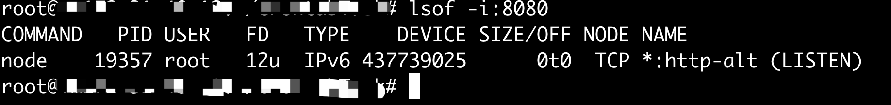
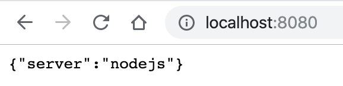
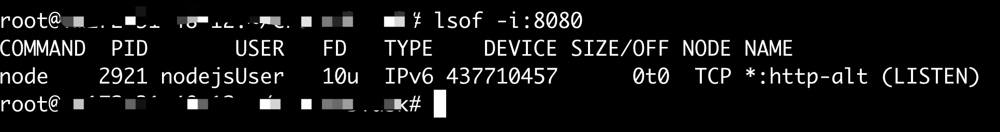

总体思路
- 在linux服务器新建无登录账号（/sbin/nologin/）
- 构建自动化启动进程脚本
- 新建计划任务定时监控服务（crontab）
初衷
在服务器的管理中，我们需要启动一些服务，出于安全方面的考虑，我们不希望以root的方式启动它，而是为这些服务单独建立相应的账号，并且禁用它们的shell登录权限。
实现过程
场景说明
在linux服务器上实现对于nodejs进程进行守护的场景。
构建nodejs程序
我们新建一个nodejs程序server.js：
1
2
3
4
5
6
7
8
9const http = require(‘http’)
const server = http.createServer(function (req, res) {
res.writeHead(200, {
‘Content-Type’: ‘application/json’
});
res.end(‘{“server”:”nodejs”}’);
});
server.listen(8080)
console.log(“port = 8080”)常规启动：
1
node server.js
启动以后，server.js进程属于root用户，或者其他可以shell登录的用户：

- 在浏览器敲入ip加端口即可查看运行结果：

新建无登录账号
新建账号：
1
useradd -M -s /sbin/nologin nodejsUser
在/etc/passwd下查看账号状态：
nodejsUser是无法shell登录的，我们可以使用如下命令启动server.js：1
2
3
4# 赋予nodejsUser账号可访问server.js文件的权限
sudo chown nodejsUser /opt/nodejsUser/server.js
# 启动
sudo -u nodejsUser node /opt/nodejsUser/server.js此时查看8080端口，可以发现，现在用户是nodejsUser了：

编写自动化启动脚本
此处我们需要借助tmux工具来实现实时监控nodejs进程的功能，下面是具体实现过程server.sh：
1
2
3
4
5
6
7
8
9
10
11
12
13
14
15
16
17
18
19
20
21
22
23
24
25
26
27
28
# tumx启动脚本
# 兼容zsh
export DISABLE_AUTO_TITLE="true"
# 会话名称
session=“sever”
# 判断server.js进程是否存在
ps -ef|grep "node /opt/nodejsUser/server.js" |grep -v grep
if [ $? -ne 0 ]
then
echo "start process....."
# 判断tmux会话是否存在
tmux has-session -t $session
if [ $? = 0 ]
then
# 如果存在，则进入该会话
tmux attach-session -t $session
else
# 如果不存在，则新建会话
tmux new-session -d -s $session
fi
# 发送启动程序命令
tmux send-keys -t $session "sudo -u nodejsUser node /opt/nodejsUser/server.js" C-m
else
echo "runing....."
fi
exit当tmux会话启动以后，可以随时查看server.js运行的情况：
1
2# 启动会话
tmux a -t server
自定义计划任务
新建计划任务：
1
crontab -e
任务内容：
1
*/1 * * * * /bin/bash /opt/nodejsUser/server.sh >> /opt/nodejsUser/run.log 2>&1
每分钟执行一次server.sh脚本，执行情况记录到日志文件run.log当中。crontab的定时机制可以自行查阅，比较好理解，这里不再赘述。
写在最后的话
到此为止，所有功能均已实现，我们的计划任务会定时对server.js进程扫描，当发现该进程crash时，会自动重启。当服务器重启时，计划任务也会超常运行。
其实在这之前，我在管理nodejs项目时，使用的是pm2监控工具，现成的免费工具，用起来确实也比较方便，但是在无登录账号下遇到无法启动pm2的问题，虽然花了一些时间攻克，但最终并没有解决，因此就有了本文中的解决方案，先用一段时间看看效果吧。